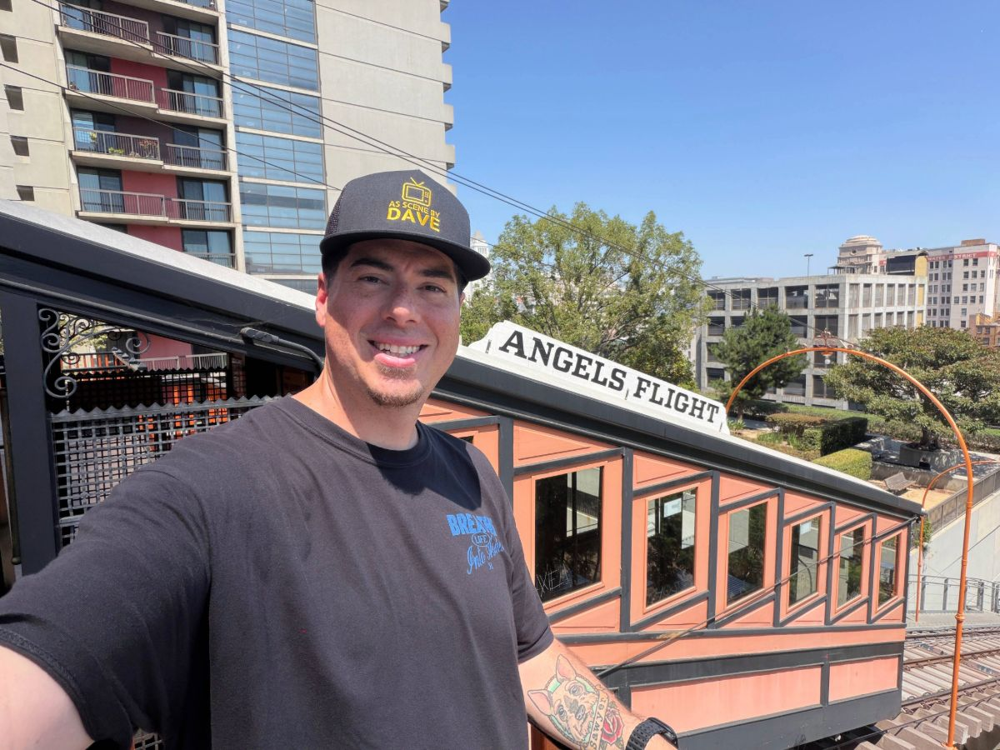

The person behind the stories
About Me
Welcome! I’m Dave, and I’m really glad you’re here. I visit places connected to history, Hollywood, true crime, cemeteries, movies, and stories that deserve to be remembered.
Where It Started
I’ve lived in Southern California my entire life, and I’ve always been fascinated by the stories hidden in the places all around us.
Long before I ever picked up a camera, I spent years visiting cemeteries simply because I wanted to learn more about the people buried there and the history they left behind.
I’ve always found cemeteries interesting. Every headstone represents someone who had a life, a family, and a story. Some of those stories are well known, while others have nearly disappeared with time.
That curiosity eventually grew into something much bigger. Today, As Scene by Dave is my way of sharing those discoveries with you.
The Places I Visit
When I travel, especially around Southern California and beyond, I like to film the interesting and often overlooked places I come across.
It might be a famous Hollywood filming location, the home of a legendary actor, a historic cemetery, a true crime site, or a roadside stop most people pass without noticing.
I try to capture what makes each location worth remembering and show you what it looks like today.
I don’t believe every story needs to be sensationalized. What you’ll find here is simple, honest storytelling, thoughtfully researched history, and a genuine look at the locations I visit.
Why “As Scene by Dave”?
People sometimes ask about the name.
Originally, it was going to be As Seen by Dave because every video is my perspective, showing these places as I experience them.
But many of the stories I enjoy are connected to Hollywood, movies, television, actors, and famous filming locations.
Changing “Seen” to “Scene” felt like the perfect fit. It’s a simple play on words that reflects both what I do and what I love.
What You’ll Find Here
One More Thing
You may notice that I occasionally stumble over my words. I’ve had a stutter for as long as I can remember, and it still pops up from time to time.
I could edit every pause and restart out of my videos, but I’d rather be myself.
What you see is me, and I hope that’s part of what makes these stories feel real.
Contact
If you’d like to get in touch, have a location you think I should visit, or just want to say hello, I’d love to hear from you.
Email: AsScenebyDave@gmail.com
Return to HomeAs Scene by Dave... out.